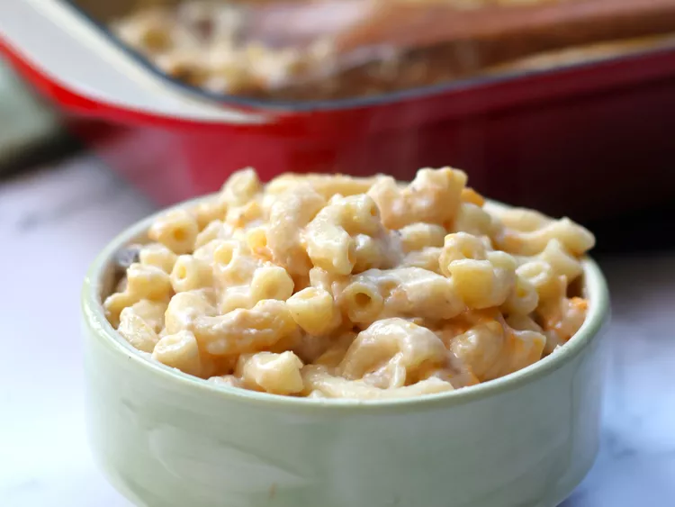

MAC N CHEESE

ingredients
- 1 (10.5 ounce) can condensed cream of mushroom soup (such as Campbell’s)
- 1 ¼ cups milk
- ½ cup shredded Cheddar cheese
- 1 ½ cups macaroni
directions
- Cook pasta in a large pot of boiling salted water until al dente. Drain.
- Mix together condensed soup and cheese. Using the empty soup can, measure 1 can of milk; mix into the soup
mixture. Stir in cooked pasta. Dump into a greased casserole dish, and cover.
- Bake at 325 degrees F (165 degrees C) until hot and bubbly, about 30 minutes.
Back to odin recipes